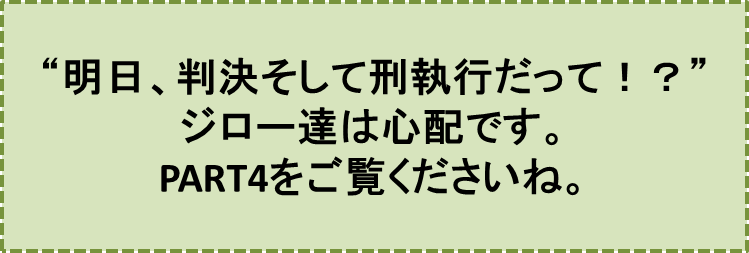

カラスの大王物語-PART3-
『裁判』の巻
笠原正雄
晩ご飯の後、ジローは、扉の隙間から見える夜空をたっぷり観察しました。
町の子ジローにとっては、今まで見たこともない美しい夜空！
無数の星達が満天に輝き、その見事さに息を飲みます。
町で見る夜空とは全く違います。全然違います。ジローの住む町の夜空ではお星さま二つか三つが、うすーく、小さーく見えるだけですから。
ジローは牢屋の中にいることさえ忘れ、本物の夜空を眺めつづけました。
どのくらい時間が経ったでしょう。ジローはだんだん眠くなり、床の上にごろりと横になりました。
そして、朝、強い日差しが扉の隙間から入ってくるまで、ぐっすり眠ってしまいました。
朝ご飯として、ジャガイモのおかゆを食べた後、ジロー達三人は、裁判所へと引き立てられました。
裁判所は森の広場に設けられています。
広場のあちらこちらに、澄んだ冷たい水を溢れんばかりに蓄えた泉が、勢いよくたくさんの水玉を青空に向け、舞い上げています。
空高く舞い上がった無数の水玉達が朝日をあびてキラキラ輝きます。
ヒノキ作りの真っ白なポールが、裁判所を取り囲むように並んでいます。
ひときわ背の高いポールの上に、インコの花五郎とキツツキのキーコが並んで止まっている様子が、ジローの目に入りました。
キツツキのキーコは、時計の針が丁度9時を指したのを見て、自慢の嘴（くちばし）で大きな釣鐘を激しく、そしてリズミカルに打ち鳴らしました。
“カーン”
“カーン”
“カーン”
森全体に鐘の音（ね）が、余韻を残して響いていきます。
インコの花五郎が自慢のカラフルな羽根を二、三回大きくはばたかせた後、甲高い声で叫びました。
「カラスの大王様の森、裁判の始まりぃー」
いよいよ裁判が始まります。
裁判で、ジロー達は如何にも粗末な切り株が、三つ並んだだけの被告席に、座らされました。驚いたことに、一段と高いところにジローのフリスビーが、本立てに挟まれて見世物のように展示されているではありませんか。
まわりには監視人らしいおサルさんが、フリスビーを物々しく見守っています。大切な証拠品ということでしょうか。
裁判は予想通り、
- フリスビーをハッピーに当てた上、驚いて飛び上がったハッピーの姿を見て、地面を転げまわるようにして大笑いしたこと
- 町の人達にとって大切なハッピーが生ゴミをお行儀よく食べていたにも関わらず、タマがハッピーに襲い掛かったこと
この二つの事件、というよりもカラスの大王様を傷つけた二つの“大罪”を同時に裁くためでした。
ハッピーの姿はどこにも見当たりませんでしたが、裁判長のフクロウのフッキ―博士が、「裁判長御席」と記された背もたれのある椅子に、胸を思い切り反らせて座っていました。
フッキー博士は法学、医学は勿論、世の中のこと全てを知り尽くしている、この森一番の知恵者です。
裁判では三人の罪状が長々と述べられたり、長ーい髭がご自慢の弁護士ヒツジの洋介が、退屈そのものの弁護の言葉を長々と述べたりしましたので、恐ろしい裁きの場であることも忘れて、ゴンが真っ先に、そしてタマが次に眠りにつき、最後にジローまで寝息を立て始めました。
裁判は、そんな三人の姿を無視したまま進行し、お昼過ぎに終わりました。
「判決、そして刑執行は明日です！」
と裁判長のフッキ―博士が大きな声で宣言しましたので、ジロー達は目を覚ましました。そして直ぐ、おサルさんの機動隊に引率されてもとの牢屋に収まりました。
“明日判決だって！ 刑執行だって！ 何か怖いなぁ”
ジロー達が不安な表情でうずくまっているのを、扉の隙間から見ていたクマ吉は、大きく咳払いをしてから、口を開きました。
「お前さん達、言っておくけれど、明日の判決が恐ろしくなって、牢から逃げ出したりしたら、即、打ち首だぞ！ よく分かったね……」
ジロー達は返す言葉もありません。クマ吉はこの様子を見ると、さも愉快そうに笑いながら言いました。
「お前さん達、研ぎ澄ました斧の側に黒と黄色のペンキが置いてあったのに気付いたかなぁ。……そうそう君達三人、不謹慎なことに神聖な裁判の場で眠りこけていたねぇ。だから、何のために置いてあったか、この儂（わし）が想像力を働かせて教えてやろう。
あの黄色と黒のペンキは、タマさんの玉虫色の毛をトラのように黄色と黒の縞模様にするためのものなんだ。こうすればタマが近づいてもカラスの大王様、いや町の人々の言うハッピーは、危険なネコとして直ぐ気が付くことができるからさ」
こう言ってクマ吉は、大きな体を揺すりながら
“クワッ”“クワッ”“クワッ”
と、愉快でたまらないというように笑いました。
……しかし、この後クマ吉は曇った表情になり、しばらく考え込んでいました。そしてようやく重い口を開きました。
「……そうだ、斧の使い方はねぇ。儂（ワシ）の想像ではね……。
あっ、止そう。やはり止そう。こんなことを想像するのは、とても恐ろしいことだから……」
クマ吉は、ここまで言った後、もう黙ってしまいました。
この言葉にジロー達は益々不安になり、まさにもう泣き出しそうになりました。
♪♪♪♪コーヒーブレイク♪♪♪♪
